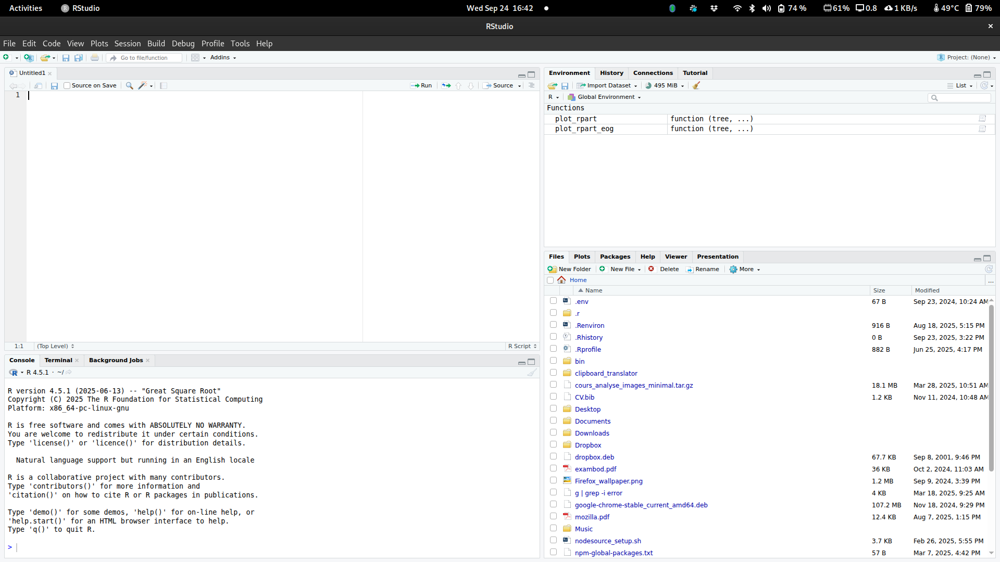

[1] 5[1] 50[1] 5[1] 4Formation théorique | 9h à 12h
26 septembre 2025
Le but est que vous puissiez sortir d’ici avec une compréhension de base de R et que vous soyez capable d’aller chercher des ressources pour continuer à apprendre.
R c’est :
Pourquoi l’utiliser ?
Aujourd’hui nous allons apprendre les bases pour analyser de vraies données

R est utilisé dans la vraie vie :
Organisations :
Recherche au Québec :
Suivi quotidien des intentions de vote - Élections fédérales 2025
Note
Animation générée automatiquement chaque jour avec R - Centre d’analyse des politiques publiques
R s’adapte à tous types de données
Texte :
Multimédia :
Explorez vos données de manière interactive
Astuce
Cliquez sur l’image pour voir l’application en action
Transformez vos analyses en outils accessibles Exemples d’utilisation :
Note
Aucune connaissance en développement web nécessaire
Apprendre R ouvre la porte à d’autres langages
Les concepts appris en R se transfèrent facilement :
Analyse de données :
Développement :
Note
Une fois qu’on maîtrise un langage de programmation, les autres deviennent beaucoup plus faciles à apprendre
Quelle est la différence ?
Liens de téléchargement :

Script
Où on écrit notre code
Environment
Nos objets et données
Console
Où s’exécutent les commandes
Files/Plots
Fichiers et graphiques
À tester dans la console
En R, on sauvegarde tout dans des objets avec <-
Note
Important : Les objets apparaissent dans le panneau Environment de RStudio !
[1] "numeric"[1] "character"[1] "logical"Problème fréquent en analyse de données
Parfois, des nombres sont stockés comme du texte dans vos données. R ne peut pas calculer avec du texte !
[1] "8" "7.5" "6.8"[1] "character"[1] 8.0 7.5 6.8[1] "numeric"[1] 7.433333Bonne pratique
Toujours vérifier le type de vos variables avec class() avant de faire des calculs !
Un data frame = tableau avec lignes et colonnes
titre annee note genre
1 Dune 2021 8.0 Sci-Fi
2 Oppenheimer 2023 8.3 Biographie
3 Barbie 2023 6.8 Comédie'data.frame': 5 obs. of 4 variables:
$ titre: chr "Dune" "Oppenheimer" "Barbie" "The Zone of Interest" ...
$ annee: num 2021 2023 2023 2023 2023
$ note : num 8 8.3 6.8 7.4 7.6
$ genre: chr "Sci-Fi" "Biographie" "Comédie" "Drame" ...$ (recommandé)[ ][1] "Dune" "Oppenheimer"
[3] "Barbie" "The Zone of Interest"
[5] "Killers of the Flower Moon"[1] "Dune" "Oppenheimer"
[3] "Barbie" "The Zone of Interest"
[5] "Killers of the Flower Moon" titre genre
1 Dune Sci-Fi
2 Oppenheimer Biographie
3 Barbie Comédie
4 The Zone of Interest Drame
5 Killers of the Flower Moon DrameUne fonction fait une tâche : fonction(argument1, argument2)
Min. 1st Qu. Median Mean 3rd Qu. Max.
6.80 7.40 7.60 7.62 8.00 8.30 Les packages sont comme des applications pour R
Analogie
R de base = téléphone vide
Packages = applications qu’on télécharge
Collection de packages pour l’analyse de données moderne
Packages principaux :
readr : importer des donnéesdplyr : manipuler des donnéesggplot2 : créer des graphiquestidyr : nettoyer des donnéesAvantages :
Différence cruciale
install.packages("nom") : télécharger le package (1 seule fois)library(nom) : activer le package (à chaque session R)Installer des packages
Bonne pratique
Mettez toujours vos library() au début de votre script
Votre ordinateur = une grande bibliothèque
Chaque fichier a une adresse précise pour le retrouver !
Exemple d’organisation :
📁 Mon ordinateur
📁 Documents
📁 Université
📁 Session_Hiver2024
📁 Cours_R
📄 donnees.csv
📄 mon_script.RL’adresse complète (chemin) :
C:/Documents/Université/Session_Hiver2024/Cours_R//Users/votrenom/Documents/Université/Session_Hiver2024/Cours_R/À tester maintenant !
[1] "/home/etienne_prx/Dropbox/travail/enseignements/R_intro_fss"R travaille toujours dans UN dossier à la fois !
C’est son “bureau” où il cherche vos fichiers par défaut.
Structure recommandée
📁 Mon_Projet_R/
📁 code/ # tous vos scripts R
📄 analyse.R
📄 graphiques.R
📁 data/ # tous vos fichiers CSV, Excel
📄 titanic.csv
📄 sondage.xlsx
📁 graphs/ # vos graphiques exportés
📄 histogram_ages.png
📁 outputs/ # vos résultats et rapports
📄 resultats.csvPourquoi c’est important ?
Méthode 1 : Avec du code
Méthode 2 : Menu RStudio Session → Set Working Directory → Choose Directory...
Avertissement
Attention : Il faut refaire setwd() à chaque fois qu’on ouvre RStudio !
Dans RStudio :
getwd() montre où on estSur votre ordinateur :
Astuce
Le panneau Files de RStudio montre le même contenu que list.files() !
Méthode propre
setwd() pour y allerProchaine slide : On va charger les vraies données du Titanic !
Utilisons les données Titanic pour pratiquer !
Survived Pclass Name Sex Age
1 0 3 Mr. Owen Harris Braund male 22
2 1 1 Mrs. John Bradley (Florence Briggs Thayer) Cumings female 38
3 1 3 Miss. Laina Heikkinen female 26
Siblings.Spouses.Aboard Parents.Children.Aboard Fare
1 1 0 7.2500
2 1 0 71.2833
3 0 0 7.9250Téléchargez les données
Cliquez sur ce lien
Attention de bien spécifier votre chemin d’accès!
Toujours commencer par comprendre nos données
[1] 887 8[1] "Survived" "Pclass"
[3] "Name" "Sex"
[5] "Age" "Siblings.Spouses.Aboard"
[7] "Parents.Children.Aboard" "Fare" [1] 887[1] 8'data.frame': 887 obs. of 8 variables:
$ Survived : int 0 1 1 1 0 0 0 0 1 1 ...
$ Pclass : int 3 1 3 1 3 3 1 3 3 2 ...
$ Name : chr "Mr. Owen Harris Braund" "Mrs. John Bradley (Florence Briggs Thayer) Cumings" "Miss. Laina Heikkinen" "Mrs. Jacques Heath (Lily May Peel) Futrelle" ...
$ Sex : chr "male" "female" "female" "female" ...
$ Age : num 22 38 26 35 35 27 54 2 27 14 ...
$ Siblings.Spouses.Aboard: int 1 1 0 1 0 0 0 3 0 1 ...
$ Parents.Children.Aboard: int 0 0 0 0 0 0 0 1 2 0 ...
$ Fare : num 7.25 71.28 7.92 53.1 8.05 ...Rows: 887
Columns: 8
$ Survived <int> 0, 1, 1, 1, 0, 0, 0, 0, 1, 1, 1, 1, 0, 0, 0, 1…
$ Pclass <int> 3, 1, 3, 1, 3, 3, 1, 3, 3, 2, 3, 1, 3, 3, 3, 2…
$ Name <chr> "Mr. Owen Harris Braund", "Mrs. John Bradley (…
$ Sex <chr> "male", "female", "female", "female", "male", …
$ Age <dbl> 22, 38, 26, 35, 35, 27, 54, 2, 27, 14, 4, 58, …
$ Siblings.Spouses.Aboard <int> 1, 1, 0, 1, 0, 0, 0, 3, 0, 1, 1, 0, 0, 1, 0, 0…
$ Parents.Children.Aboard <int> 0, 0, 0, 0, 0, 0, 0, 1, 2, 0, 1, 0, 0, 5, 0, 0…
$ Fare <dbl> 7.2500, 71.2833, 7.9250, 53.1000, 8.0500, 8.45…Ces fonctions montrent : types de variables, premières valeurs, dimensions
Survived Pclass Name Sex
Min. :0.0000 Min. :1.000 Length:887 Length:887
1st Qu.:0.0000 1st Qu.:2.000 Class :character Class :character
Median :0.0000 Median :3.000 Mode :character Mode :character
Mean :0.3856 Mean :2.306
3rd Qu.:1.0000 3rd Qu.:3.000
Max. :1.0000 Max. :3.000
Age Siblings.Spouses.Aboard Parents.Children.Aboard
Min. : 0.42 Min. :0.0000 Min. :0.0000
1st Qu.:20.25 1st Qu.:0.0000 1st Qu.:0.0000
Median :28.00 Median :0.0000 Median :0.0000
Mean :29.47 Mean :0.5254 Mean :0.3833
3rd Qu.:38.00 3rd Qu.:1.0000 3rd Qu.:0.0000
Max. :80.00 Max. :8.0000 Max. :6.0000
Fare
Min. : 0.000
1st Qu.: 7.925
Median : 14.454
Mean : 32.305
3rd Qu.: 31.137
Max. :512.329 Ce résumé nous révèle : Moyennes, médianes, quartiles pour les variables numériques | Fréquences pour les variables catégorielles | Présence de valeurs manquantes (NA’s)
Survived Pclass Name
0 0 0
Sex Age Siblings.Spouses.Aboard
0 0 0
Parents.Children.Aboard Fare
0 0 Note
na.rm = TRUE dans les fonctions statistiques ignore les valeurs manquantes
[1] 29.47144[1] 28[1] 14.12191[1] 0.42 80.00
0 1
1 80 136
2 97 87
3 368 119Ce tableau montre : répartition des survivants selon la classe
[1] 216Opérateurs de filtre : ==, !=, >, <, >=, <=, %in%
Adulte Enfant
757 130 # Créer plusieurs variables en une fois
titanic <- titanic %>%
mutate(
prix_eleve = ifelse(Fare > 50, "Cher", "Abordable"),
taille_famille = Siblings.Spouses.Aboard + Parents.Children.Aboard + 1 # inclure le passager lui-même
)
# Visualiser les premières lignes des nouvelles variables
titanic_newvars <- titanic %>%
select(groupe_age, prix_eleve, taille_famille)
head(titanic_newvars) groupe_age prix_eleve taille_famille
1 Adulte Abordable 2
2 Adulte Cher 2
3 Adulte Abordable 1
4 Adulte Cher 2
5 Adulte Abordable 1
6 Adulte Abordable 1# Stratégie pour gérer les valeurs manquantes dans la variable Age
# Étape 1: Remplacer les NA par la médiane des âges existants
titanic <- titanic %>%
mutate(Age = ifelse(is.na(Age), # SI l'âge est manquant (NA)
median(Age, na.rm = TRUE), # ALORS utiliser la médiane
Age)) # SINON garder l'âge original
# Étape 2: Vérifier que le remplacement a fonctionné
sum(is.na(titanic$Age)) # Compter combien de NA restent (devrait être 0)[1] 0# A tibble: 3 × 5
classe nb_passagers nb_survivants taux_survie age_moyen
<int> <int> <int> <dbl> <dbl>
1 1 216 136 63 38.8
2 2 184 87 47.3 29.9
3 3 487 119 24.4 25.2La fonction n() compte le nombre de lignes dans chaque groupe
# A tibble: 6 × 4
# Groups: classe [3]
classe sexe nb_passagers taux_survie
<int> <chr> <int> <dbl>
1 1 female 94 96.8
2 1 male 122 36.9
3 2 female 76 92.1
4 2 male 108 15.7
5 3 female 144 50
6 3 male 343 13.7Pourquoi factor(classe) dans nos graphiques ?
[1] "integer"
1 2 3
216 184 487 Différence visuelle dans les graphiques :
factor() : axe continu avec espaces bizarresfactor() : barres bien distinctes pour chaque classeAstuce
Character vs Factor : as.character() marche aussi, mais factor() nous donne plus de contrôle sur l’ordre d’affichage !
Éléments de base :
ggplot() : initialise le graphique avec les donnéesaes() : spécifie quelles variables utilisergeom_bar() : type de graphique (barres)Nouveaux éléments :
fill : couleur de remplissage des barreslabs() : ajouter titres et étiquettestheme_minimal() : style épuréNouvelle technique : fill = factor(survie) dans aes() crée des couleurs automatiques selon la survie
position = "fill" transforme en proportions (0 à 1) pour comparer les taux
Nouveaux éléments :
geom_histogram() : pour variables numériques continuesbins = 20 : nombre de barresalpha = 0.7 : transparence (0 = invisible, 1 = opaque)La couleur révèle des patterns : les survivants avaient-ils des billets plus chers ?
# Sauvegarder le dernier graphique
ggsave("age_prix_survie.png", width = 10, height = 6)
# Sauvegarder des données nettoyées
write.csv(titanic, "titanic_nettoye.csv", row.names = FALSE)
# Sauvegarder nos résultats d'analyse
write.csv(resume_complet, "analyse_survie_classe_sexe.csv", row.names = FALSE)Toujours sauvegarder : scripts, données nettoyées, graphiques, résultats
Erreurs courantes et solutions :
# Erreur : objet non trouvé
mean(donnees$age)
# Error: object 'donnees' not found
# → Vérifier le nom de l'objet
# Erreur : colonne inexistante
titanic$ages # au lieu de Age
# → Utiliser names(titanic) pour voir les vraies colonnes
# Erreur : parenthèse manquante
mean(titanic$Age
# → Vérifier que toutes les parenthèses sont ferméesRéflexes : lire le message, vérifier l’orthographe, tester ligne par ligne
Workflow recommandé
str(), summary(), glimpse()Récapitulatif
✅ Interface RStudio et console
✅ Objets, vecteurs et data frames
✅ Types de données et fonctions
✅ Import et exploration de données
✅ Analyse descriptive (moyennes, tableaux)
✅ Premiers graphiques avec ggplot2
✅ Manipulation avec dplyr (filter, select, group_by)
Vous pouvez maintenant :
Documentation et aide :
?fonction dans R (ex: ?mean)Apprentissage :
Communauté :
Merci pour votre attention !
Contact : etienne.proulx.2@ulaval.ca
Tous les codes sont copiables depuis cette présentation
Prochaines étapes : Continuez avec vos propres données et n’hésitez pas à expérimenter !